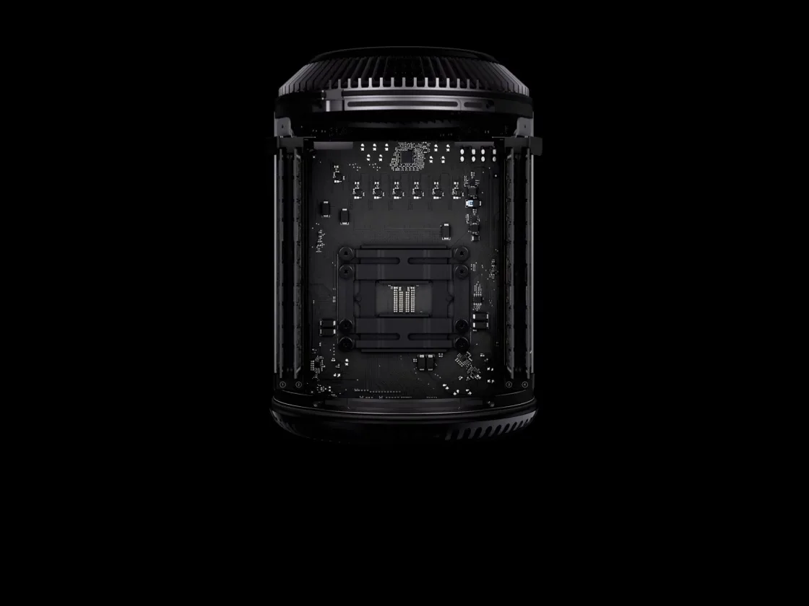

scroll-canvas
Scroll down: the sofa below comes apart and goes back together with the scroll, forwards and
back — 256 frames drawn on a canvas, the way Apple's product pages do it. GSAP's ScrollTrigger
pins the scene and drives the timeline; scrollCanvas(canvas, { gsap, frames }) is the
sequence's part of it, and the title and the button are two more tweens on it.
↓ Scroll
After the scene
Scroll back up: it plays backwards just as smoothly — each frame is a picture already in memory,
only drawn. Watch the panel on a slow connection: the first frame comes at once, then frames
here and there across the whole sequence, then the gaps between.
Played once, when it comes into view
play: true — no scroll needed: when half of it is on screen and every frame is in, it plays
by itself and stops on its last frame, the way Apple's hero films do. The caption is on the same
timeline, at 2 seconds. Reload to see it again. Frames not in within timeout (5 s) after it
came into view: it does not play — the last frame, the caption in. Here it has loaded
its frames already as you scrolled near; to see it give up, slow the network in the browser's tools (Network ›
Slow 4G, cache off) and reload.
Only on a wide Retina screen
The same, but CSS says where it moves: @media (width < 64rem), (resolution < 2x) sets
--pg-scroll-canvas-motion: none — on a phone, or a screen that is not Retina, it rests,
and data-pg-scroll-canvas-still="true" lets a picture of its own take its place.

Every part, in its place
a picture, not the film